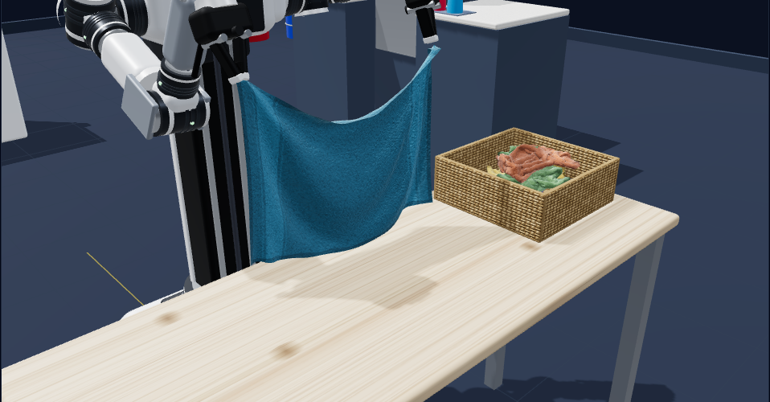

Nov 2026 · Robotics software
Robot Simulator
A two-armed mobile robot with real-time physics that sorts blocks, loads a dishwasher and washer, and folds towels from a basket, live in the browser.
- A wheeled robot with a lift, rotating waist and two 7-joint arms: 7-DOF inverse kinematics, smooth trajectories and collision avoidance.
- Real physics, not glued grasps: Rapier rigid bodies for every item and a custom ~1,800-particle cloth simulation with self-collision and friction.
- Towel folding modeled on commercial folding robots: pick a crumpled towel from a basket, catch a corner in mid-air, fling it flat, fold it twice and stack it, with head and wrist cameras. Four base cameras gauge the room on every side, so it slows before it reaches a table and stops short of a collision.
- The same robot also runs in MuJoCo, with MJCF/URDF models generated from its joint table and 15 automated model checks.
- React
- TypeScript
- three.js
- Rapier
- Cloth simulation
- MuJoCo
- Python